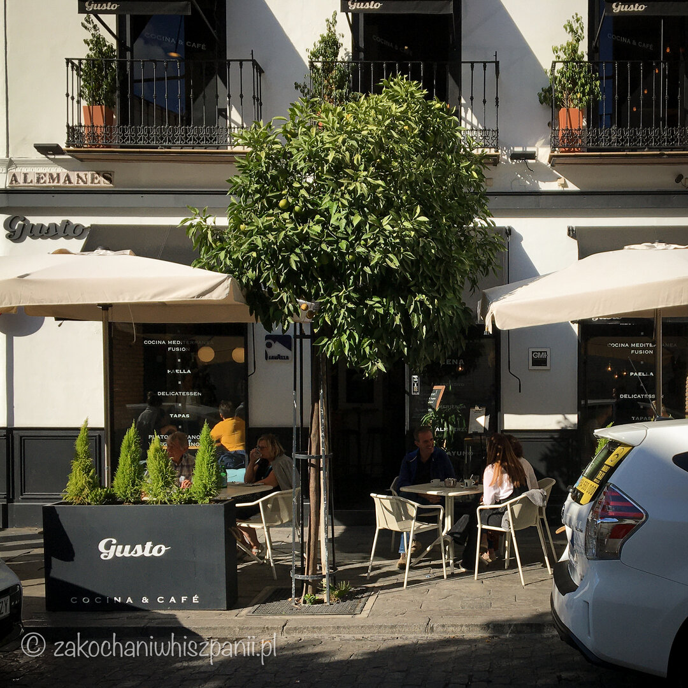

Restauracja Gusto Sewilla
Gdzie zjeść w Sewilli?
Jesteś w Sewilli lub wybierasz się do tego hiszpańskiego miasta? Szukasz dobrego miejsca na zjedzenie śniadania, obiadu lub kolacji? Jeśli tak, to polecamy Ci restaurację Gusto, która znajduje się w samym centrum stolicy Andaluzji. Przy calle Alemanes 23 z przepięknym widokiem na jeden z symboli tego miasta, którym jest La Giralda i Puerta del Perdón. Lokal ten znany jest z nowoczesnej kuchni hiszpańskiej i śródziemnomorskiej. Jest również dobrym miejscem dla wegan oraz wegetarian. Stawiają tu na produkty sezonowe, lokalne i dobrej jakości.

My zamówiliśmy paellę z owocami morza. Nie mamy jej zdjęcia ale musisz wierzyć nam na słowo, to najlepsza paella, którą jedliśmy w Hiszpanii. Odpowiednia ilość owoców morza. Idealny kolor, smak. Cóż więcej pisać, fenomenalna.
Innym razem, będąc w restauracji Gusto spróbowaliśmy krewetek w czarnej tempurze z sosem na bazie majonezu i vino oloroso de Jerez (lokalnego sherry). Podane były z zielonymi szparagami. Danie wyglądało imponująco jak i również smakowało wyśmienicie.
Kolejną propozycję z karty, którą zamówiliśmy to ajoblanco. Danie pochodzące z hiszpańskiego regionu andaluzji. W restauracji Gusto podają je z wędzoną ośmiornicą, kukurydzą i cebulą przygotowaną w winie szczepu Pedro Ximenez. Dla mniej wtajemniczonych w nazwy dań hiszpańskich, ajoblanco to typowa zupa chłodnik popularna w Granadzie i Maladze. Wykonana na bazie migdałów, oliwy z oliwek, odrobiny czosnku.
Mają tu również smaczne desery, do których chętnie polecą Ci kawę lub kieliszek doskonałego słodkiego wina likierowego Pedro Ximenez.
Obsługa jest profesjonalna, niezwykle miła i pomocna. Przyjaźnie nastawiona na dzieci, którym rozdają czekoladki za zjedzony posiłek. Atmosfera jest miła. Restauracja Gusto to fantastyczny lokal, który możesz wybrać zarówno na obiad rodzinny, lub romantyczną kolację we dwoje.
Będąc ponownie w Sewilli chętnie wrócimy do Gusto i sprawdzimy czy nadal jest tam tak smacznie jak podczas naszej pierwszej wizyty. Polecamy Ci ten lokal nie tylko ze względu na smaczne jedzenie ale również, na przepiękny widok z okna na znane zabytki i drzewka pomarańczowe, którym możesz się nacieszyć oczekując na zamówione dania.
Najnowsze wpisy


Tagi